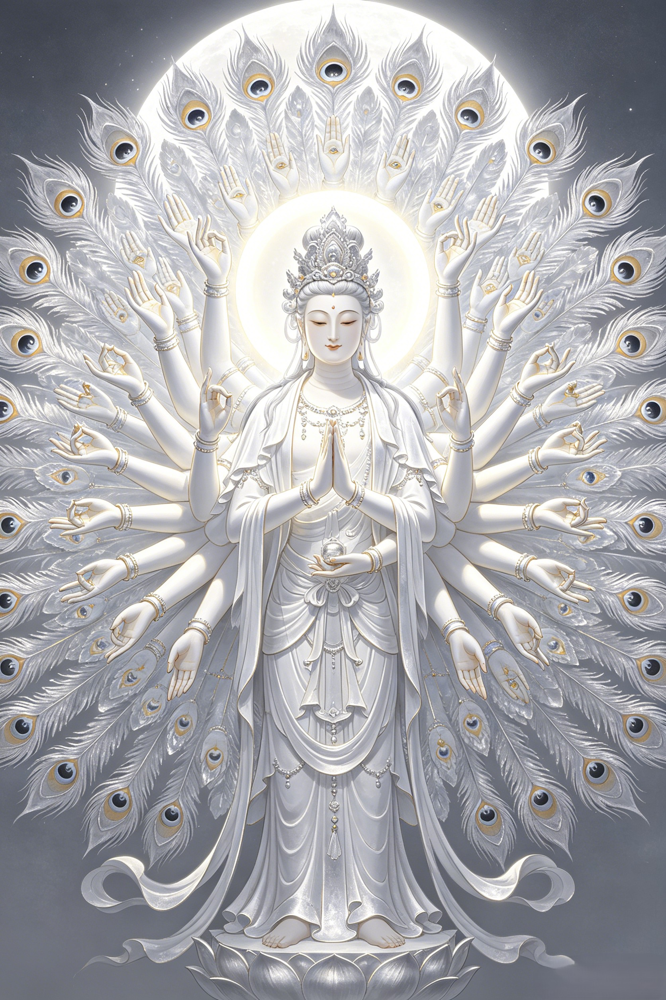

Origins
From the male bodhisattva Avalokiteshvara of India to the female Guanyin of China. The most remarkable transformation in religious history — how a god changed gender, and why it mattered.
In Indian Buddhism, Avalokiteshvara was male — a prince-like bodhisattva, often depicted with a mustache and a princely crown. His name means "The Lord Who Looks Down" — one who gazes upon the suffering world with compassion. In the Lotus Sutra, he is described as a being who can manifest in any form — male, female, god, demon, animal — whatever form will best reach the suffering being before him. This power of infinite transformation would become the theological foundation for the most dramatic change in Buddhist history.
When Buddhism arrived in China, Avalokiteshvara's name was translated by the great monk Kumarajiva as "Guanshiyin" (观世音) — literally "the one who perceives the sounds of the world." The Chinese translation emphasized the compassion aspect: not just looking, but listening. This subtle shift in meaning — from a lord who gazes to one who listens — planted the seed. A listener is receptive, patient, nurturing. Qualities that, in Chinese culture, were increasingly associated with the feminine.
By the Tang dynasty, the transformation was complete. Avalokiteshvara had become Guanyin — female, maternal, wrapped in white robes. Chinese artists began depicting her with soft features, flowing garments, a jade vase of pure water, and a willow branch of healing. Why did this happen? Because in Chinese folk religion, compassion was a mother's domain. The bodhisattva who hears the world's cries could not, in the Chinese imagination, be a remote prince — she had to be a mother who would drop everything to come to her child's aid. Theology followed culture. And Chinese Buddhists were right: the Lotus Sutra itself said Avalokiteshvara could take any form. If the female form best conveyed compassion in China — then Guanyin was female. The sutra permitted it. The people demanded it. And so it was.
The defining moment in Guanyin's mythology is her great vow. According to the Karandavyuha Sutra, Guanyin descended into hell to liberate the suffering souls there. She taught the Dharma to the damned, and one by one, they were released. But as soon as one soul left, another fell into hell to take its place. Seeing the endless cycle, Guanyin's head shattered into a thousand pieces from the sheer cognitive overwhelm of witnessing infinite suffering. Amitabha Buddha gathered the fragments and reconstructed her with eleven heads — so she could see suffering in all directions — and a thousand arms, each with an eye in the palm, so she could reach toward every cry simultaneously. She vowed: "Until all beings are liberated, I will not enter Buddhahood." She could become a Buddha at any moment. She chooses not to. Because someone still needs her.
Today, Guanyin is the most widely worshipped female deity in East Asia. She appeared in Japan as Kannon. In Korea as Gwan-eum. In Vietnam as Quan Âm. In Tibet as Chenrezig — who returned to male form as the Dalai Lama's patron bodhisattva. And throughout the Chinese diaspora, from Singapore to San Francisco, her white-robed figure stands in temples, homes, and hospital rooms. Avalokiteshvara's power of infinite transformation was never just a doctrine. It became the lived reality of the most beloved deity in the Buddhist world — a god who became whatever the suffering needed her to be.